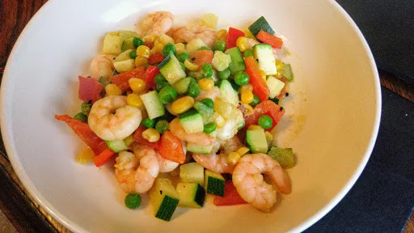

Prawn and vegetable balti

A delicious accompaniment to other balti dishes. Double the quantities if serving solo.
Servings: 4
Total: 10 mins
Ingredients
- 175 g cooked, peeled prawns
- 2 tbsp olive oil
- ¼ tsp onion seeds
- 4-6 curry leaves
- 115 g frozen peas
- 115 g frozen sweetcorn
- 1 large courgette, sliced
- 1 red pepper, deseeded and roughly diced
- 1 tsp crushed coriander seeds
- 1 tsp crushed dried red chillis
- 1 tbsp lemon juice
- 1 tbsp fresh coriander leaves, to garnish
Instructions
- Drain any excess liquid from the
prawns175 g
and pat them dry on kitchen paper. Heat the oil2 tbsp
with the onion seeds¼ tsp
and curry leaves4-6
in a non stick wok or frying pan.
- Add the pawns to the wok or frying pan and stir-fry until any liquid has evaporated.
- Add the vegetables and stir-fry fr 3-5 minutes more.
- Add the
coriander seeds1 tsp
, dried red chillis1 tsp
and lemon juice1 tbsp
. Toss over the heat for 1 minute, season to taste and serve, garnished with the fresh coriander leaves1 tbsp
.
-
kcal
165
-
fat
6.9 g
-
saturates
0.9 g
-
carbs
14.6 g
-
sugar
7 g
-
fibre
2.9 g
-
protein
11.9 g
-
salt
0.16 g
The Half Hour Cook
Short Link
Long Link